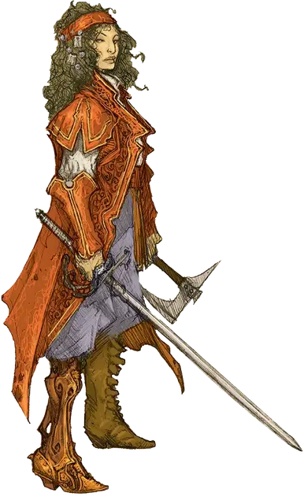

Эсмеральда д’Авенир
Ezmerelda D’Avenir
Средний Гуманоид (Человек), хаотично-добрый, именной НИП

Класс Доспеха 17 (+1 проклёпанный кожаный доспех)
Хиты 82 (11к8 + 33)
Скорость 30 футов
| мод | спас | ||
|---|---|---|---|
| СИЛ | 14 | +2 | +2 |
| ЛОВ | 19 | +4 | +4 |
| ТЕЛ | 16 | +3 | +3 |
| мод | спас | ||
|---|---|---|---|
| ИНТ | 16 | +3 | +3 |
| МДР | 11 | +0 | +3 |
| ХАР | 17 | +3 | +3 |
Навыки Акробатика +7, Восприятие +6, Выживание +6, Выступление +6, Ловкость рук +7, Магия +6, Медицина +3, Обман +9, Проницательность +3
Чувства пассивное Восприятие 16
Языки Общий, Эльфийский
Опасность 8 (3900 опыта)
Бонус мастерства +3
Особенности
Специальное снаряжение. В дополнение к своим магическим броне и оружию, У Эсмеральды есть два зелья великого исцеления [potion of greater healing], шесть фиалов со святой водой и три деревянных кола.
Использование заклинаний. Эсмеральда является заклинателем 7-го уровня. Её базовой характеристикой является Интеллект (Сл спасброска от заклинания 14, +6 к попаданию атаками заклинаниями). У Эсмеральды подготовлены следующие заклинания волшебника:
Заговоры (неограниченно):. огненный снаряд [fire bolt], свет [light], волшебная рука [mage hand], фокусы [prestidigitation]
1-й уровень (4 ячейки):. защита от зла и добра [protection from evil and good], волшебная стрела [magic missile], щит [shield]
2-й уровень (3 ячейки):. тёмное зрение [darkvision], открывание [knock], отражения [mirror image]
3-й уровень (3 ячейки):. подсматривание [clairvoyance], молния [lightning bolt], магический круг [magic circle]
4-й уровень (1 ячейка):. высшая невидимость [greater invisibility]
Черты Эсмеральды Д’Авенир.
Идеал. «Зло, что питается невинными, является худшим из всех. И оно должно быть уничтожено».
Привязанность. «Мой наставник и учитель доктор Рудольф ван Рихтен мне как отец».
Слабость. «Я пойду туда, куда боятся ступать даже ангелы».
Действия
Мультиатака. Эсмеральда совершает три атаки: две своей рапирой +1 и одну своим ручным топором +1 или своим серебряным коротким мечом. +1
Рапира. Рукопашная атака оружием: +8 к попаданию, досягаемость 5 фт., одна цель. Попадание: 9 (1к8 + 5) колющий урон.
Ручной топор +1. Рукопашная или Дальнобойная атака оружием: +6 к попаданию, досягаемость 5 фт. или дистанция 20/60 фт., одна цель. Попадание: 6 (1к6 + 3) рубящий урон.
Посеребрёный Короткий меч. Рукопашная атака оружием: +7 к попаданию, досягаемость 5 фт., одна цель. Попадание: 7 (1к6 + 4) колющий урон.
Проклятие (Перезаряжается после Продолжительного отдыха). Эсмеральда избирает целью одно существо, которое она может видеть в пределах 30 футах от неё. Цель должна преуспеть в спасброске Мудрости Сл 14 или стать проклятой.
Пока цель проклята, она получает уязвимость к одному типу урона по выбору Эсмеральды. Проклятие длится пока его не снимут заклинанием высшее восстановление [greater restoration], снятие проклятья [remove curse] или похожей магией. Когда проклятие спадает, Эсмеральда получает 3к6 урона психической энергией.
Сглаз (Перезаряжается после Короткого или Продолжительного отдыха). Эсмеральда избирает целью одно существо, которое она может видеть в пределах 10 футах от неё и творит на неё одно из следующих заклинаний (Сл спасброска 14), которым не требуется ни соматических, ни материальных компонентов: дружба с животными [animal friendship], очарование личности [charm person], удержание личности [hold person]. Если цель преуспевает в начальном спасброске, Эсмеральда становится ослеплённой до конца своего следующего хода. Как только цель преуспевает в спасброске против этого эффекта, она становится иммунной к способности Сглаз всех вистани на 24 часа.
Описание
Эсмеральда д’Авенир, вистана — протеже Рудольфа ван Рихтена, несмотря на то, что ее первая встреча с охотником на вампиров была крайне неприятной.
Свидетель трагедии. Когда Эсмеральда была маленькой девочкой, ее семья похитила сына ван Рихтена, Эразмуса, и отдала его в лапы вампирам. Даже спустя столько лет, она до сих пор слышит его мольбы о милосердии. Это событие преследовало её всё детство.
Ван Рихтен выследил семью Эсмеральды вскоре после похищения, но Вистани успели продать мальчика. Хотя ван Рихтен мог перебить их всех, вместо этого он выяснил у родителей Эсмеральды местонахождение своего сына. Удовлетворенный их ответами, он пощадил их жизни и отбыл, обдумывая полученную информацию. Эсмеральда обратила внимание на жест милосердия со стороны ван Рихтена и была очень этим впечатлена.
Трагическая история Ван Рихтена. В возрасте 15 лет, Эсмеральда, которую все еще беспокоило зло, причиненное ее семьей ван Рихтену, сбежала из дома. Два года спустя, пережив множество кошмарных приключений, она нашла ван Рихтена. Последний, решив, что она убийца, приставил меч к ее горлу и угрожал прикончить ее. Эсмеральда убедила его, что она просто хотела помочь найти его пропавшего сына, после чего ван Рихтен сообщил ей печальную участь его сына. Он нашел своего сына, которого уже превратили в вампира. Когда Эразмус взмолился о спасении от ужасной участи, ван Рихтен внял его просьбам и прикончил собственного сына.
Прощание. Эсмеральда оставалась вместе с ван Рихтеном два года, помогая ему выслеживать и убивать ночных монстров. Но из-за того, что ван Рихтен никогда не мог полностью доверять вистани, он хранил некоторые тайны от неё. Два охотника на вампиров начали действовать друг другу на нервы, а их перепалки происходили всё чаще. Наконец, Эсмеральда предложила разойтись, чтобы сохранить те остатки дружбы, которые у них всё ещё оставались, и ван Рихтен согласился.
Протез Эсмеральды. После расставания с ван Рихтеном, Эсмеральда сколотила солидное состояние, часть которого она потратила на покупку фургона, чтобы перевозить свои инструменты для охоты и убийства вампиров. Во время одного из её менее удачных приключений, вервольф откусил ей правую ногу ниже колена, после чего она, хотя и избежала ликантропии, но была выбита из колеи на месяцы. Она наняла мастера, чтобы тот изготовил ей протез ноги со стопой. После нескольких попыток, ему удалось изготовить протез, который вернул ей её подвижность. С тех пор она приловчилась к его использованию.
Великая охота на вампиров. Путешествуя с караваном вистани, до Эсмеральды дошёл слух, что Рудольф ван Рихтен отправился в Баровию, чтобы уничтожить самого могущественного вампира из существующих. Она решила, что ему может потребоваться помощь и несколько месяцев добиралась до владений Страда. Она прибыла на своём фургоне в Валлаки и разузнала о старой башне, которая производила впечатление места, которое ван Рихтен выбрал бы себе в качестве базы. Когда она прибыла туда, она обнаружила некоторые вещи ван Рихтена, но не самого охотника на вампиров. И хотя она и волнуется о пропаже своего наставника, она также хочет завоевать его доверие и уважение. Для этого она идёт по стопам исследования ван Рихтена и наводит справки о Страде и Замке Равенлофт, намереваясь разобраться с вампиром самостоятельно.
Колода тарокка. Эсмеральда держит колоду карт тарокка в своём фургоне (глава 11, область V1). Не смотря на то, что карты не волшебные, Эсмеральда может провести гадание для персонажей (см. главу 1) также, как это может сделать Мадам Ева.